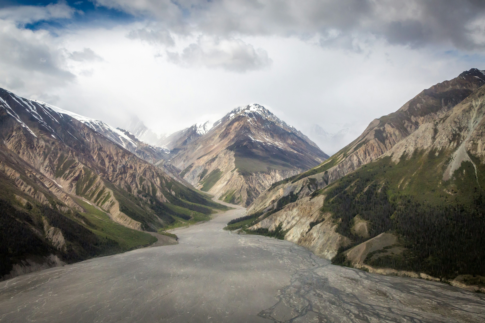
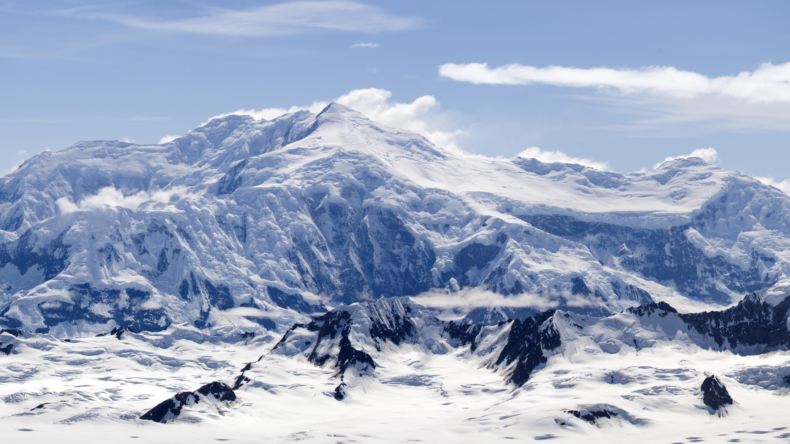

Kluane National Park and Reserve
In Canada's southwest of the Yukon is Kluane National Park and Reserve. It's a huge wilderness of ice fields, forests, and Mount Logan's soaring heights. Among the trails are the King's Throne, which twists dramatically cirque above Kathleen Lake. Alsek River snakes fed from glaciers pass across grizzly bear territory. The park protects Dall sheep as well as more than a hundred different bird species.
 